主楼 B2 · +40.6m
四锚只保留功能待重建；本设备局部不分配锚点/线索/路线。
main-b2-plant
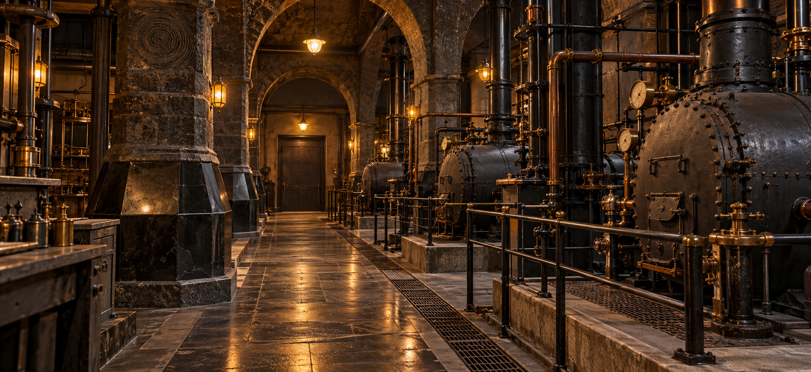


房间尺寸候选（米）
| 编号 | 名称 | 宽×深 |
|---|---|---|
| B201 | 司炉/设备 | 18×9 |
| B202 | 检修廊 | 26×3 |
| SB | 地下服务梯 | 4×5 |
先image_gen人眼效果图，后按可见空间关系绘制平面/轴测。未混入正式设计，未改游戏或外部模型。主楼图纸首批；其他建筑持续制作。
全部建筑逐层清单 · 效果图采用/舍弃表 · 原始提示词 · 主楼门两侧邻接 · 尺寸数据
四锚只保留功能待重建；本设备局部不分配锚点/线索/路线。

| 编号 | 名称 | 宽×深 |
|---|---|---|
| B201 | 司炉/设备 | 18×9 |
| B202 | 检修廊 | 26×3 |
| SB | 地下服务梯 | 4×5 |
南北地下块不以暗道自动连接；水窖水密门/干检修道仅候选；不绘隧道权限。
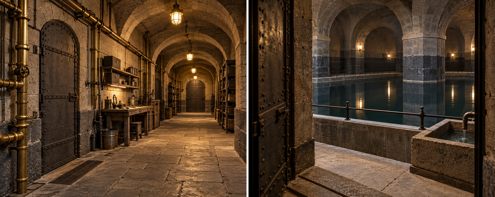
| 编号 | 名称 | 宽×深 |
|---|---|---|
| B101 | 干勤务 | 17×9 |
| SB | 地下服务梯 | 4×5 |
| S2 | 后勤梯 | 4×8 |
| B102 | 干仓/维护 | 32×9 |
| B103 | 干服务廊 | 60×3 |
| B104 | 独立水密水窖 | 7×9 |
| S1 | 主楼梯 | 6×8 |
| B105 | 水窖干检修前室 | 27×12 |
| HS2 | 梯前平台 | 4×1 |
| B106 | 独立干检修前室 | 7×3 |
食堂图对应F101/F102房型；F105厨房、F107粮仓仅候选，效果图未全覆盖。
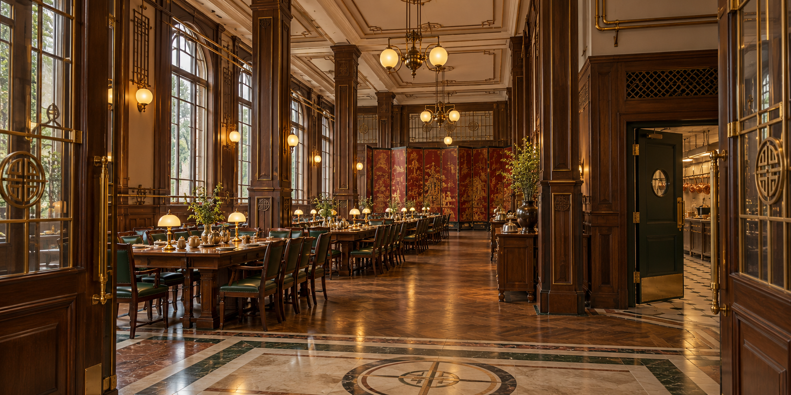
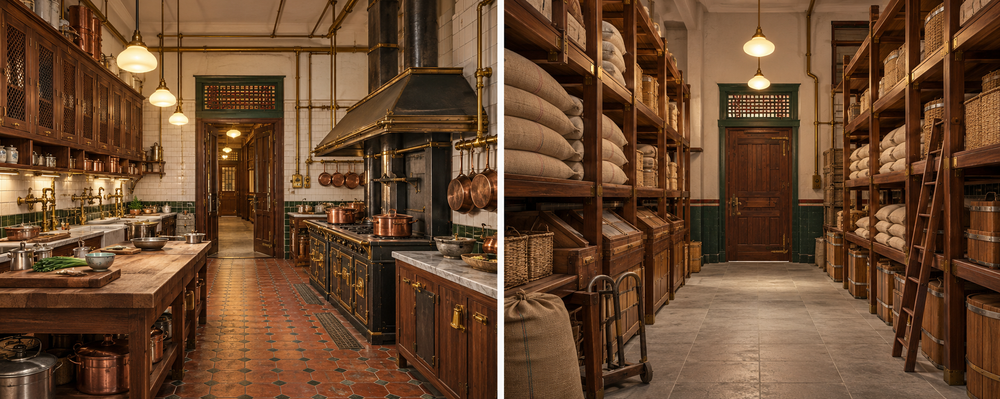
| 编号 | 名称 | 宽×深 |
|---|---|---|
| F101 | 大食堂 | 13×9 |
| F102 | 大食堂续厅 | 22×9 |
| F103A | 外气闸 | 8×3 |
| F104 | 入厅公共廊 | 12×9 |
| F105 | 厨房 | 19×9 |
| F106 | 备料/洗涤 | 15×9 |
| F107 | 主粮仓 | 14×9 |
| F108 | 收货 | 8×9 |
| F109 | 后厨服务廊 | 76×3 |
| F110 | 食堂西厅 | 10×20 |
| F111 | 食堂东厅 | 10×20 |
| F112 | 西公共廊 | 2×27 |
| F113 | 东公共廊 | 2×27 |
| S1 | 主楼梯 | 6×8 |
| S2 | 后勤梯 | 4×8 |
| S3 | 另后梯 | 4×8 |
| T | 钟楼连续承重核 | 7×8 |
| V1 | 餐梯/烟道不可走人 | 2×1 |
| M1 | 人物检修双跑梯 | 5×8 |
| F103B | 内气闸 | 8×3 |
| F103C | 正门厅 | 11×6 |
| F103D | 中联门厅 | 12×7 |
| CW | 核西公共廊 | 2.5×8 |
| CE | 核东公共廊 | 2.5×8 |
| NW | 北翼西公共廊 | 19×3 |
| NE | 北翼东公共廊 | 22×3 |
| HS2 | 梯前平台 | 4×1 |
| HS3 | 梯前平台 | 4×1 |
| HM1 | 梯前平台 | 3×1 |
16独卧保留R01–R16。甲A/乙B/丙C/丁D；公共交通不穿寝区。服务小间细分见放大图。
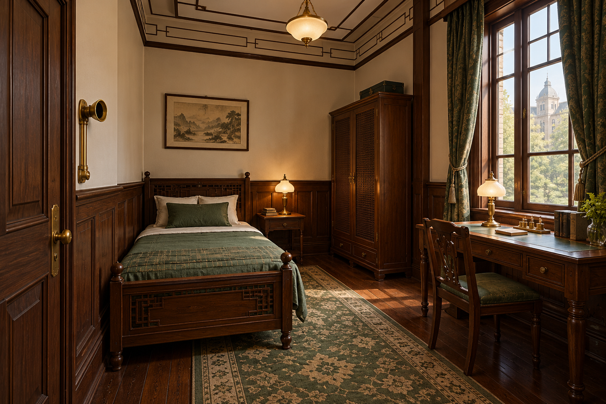
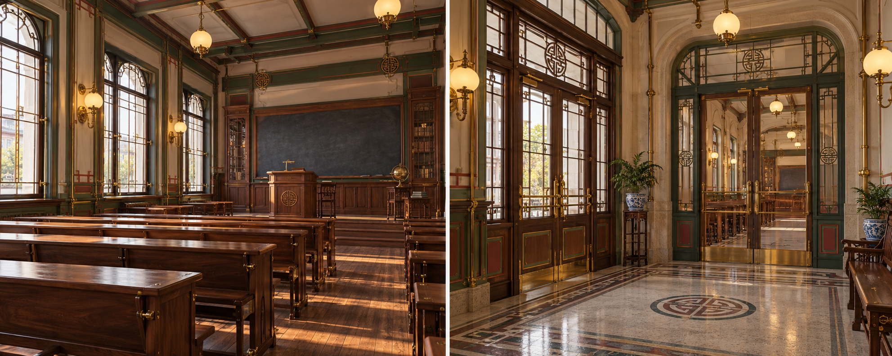
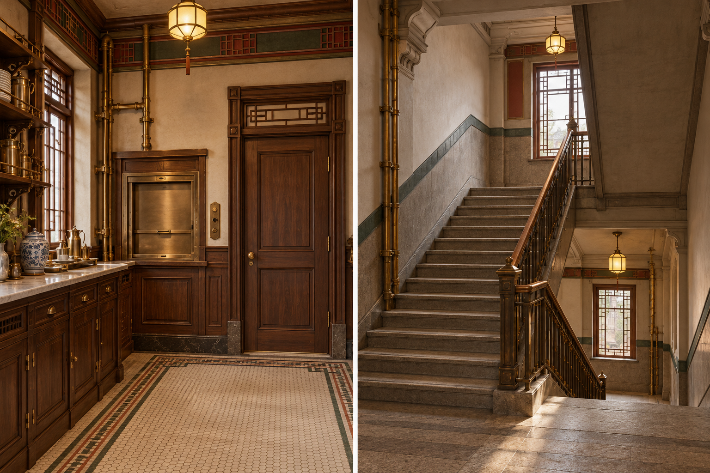
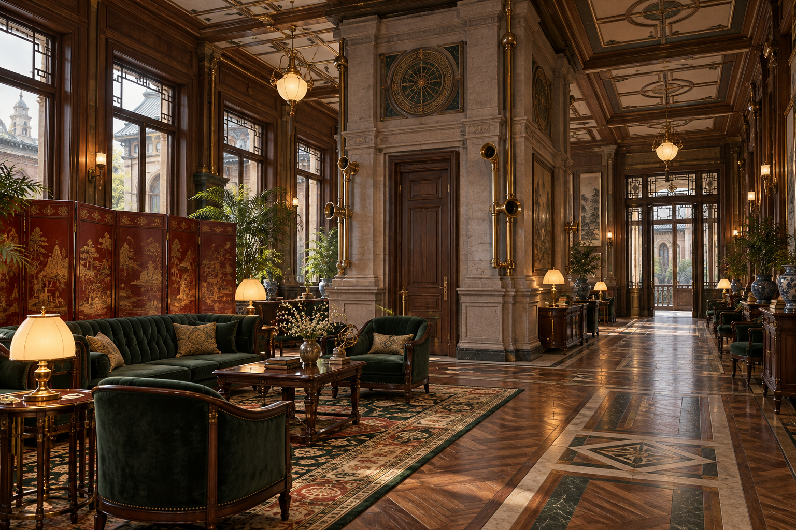
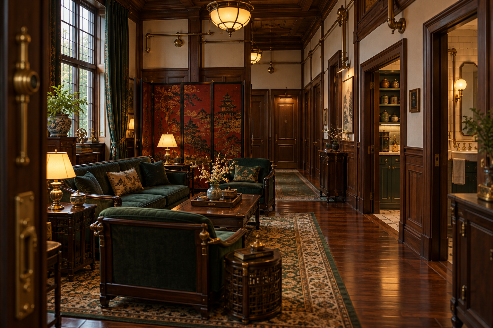
| 编号 | 名称 | 宽×深 |
|---|---|---|
| P201 | 南公共交通 | 76×3 |
| P202 | 中央起居南 | 12×9 |
| P203 | 中央起居北 | 12×7 |
| P204 | 西公共交通 | 2×27 |
| P205 | 东公共交通 | 2×27 |
| P206 | 公共讲堂 | 13×9 |
| P207 | 公共讲堂/前室 | 27×9 |
| S1 | 主楼梯 | 6×8 |
| S2 | 后勤梯 | 4×8 |
| S3 | 另后梯 | 4×8 |
| T | 钟楼连续承重核 | 7×8 |
| V1 | 餐梯/烟道不可走人 | 2×1 |
| M1 | 人物检修双跑梯 | 5×8 |
| R01 | 独卧 | 5×5 |
| R02 | 独卧 | 5×5 |
| R03 | 独卧 | 5×5 |
| R04 | 独卧 | 5×5 |
| R05 | 独卧 | 5×5 |
| R06 | 独卧 | 5×5 |
| R07 | 独卧 | 5×5 |
| R08 | 独卧 | 5×5 |
| R09 | 独卧 | 5×5 |
| R10 | 独卧 | 5×5 |
| R11 | 独卧 | 5×5 |
| R12 | 独卧 | 5×5 |
| C-I | 内部廊 | 2×20 |
| C-E | 寝区前室/气闸 | 3×4 |
| R13 | 独卧 | 5×5 |
| R14 | 独卧 | 5×5 |
| R15 | 独卧 | 5×5 |
| R16 | 独卧 | 5×5 |
| D-I | 内部廊 | 2×20 |
| D-E | 寝区前室/气闸 | 3×4 |
| A-I | 卧室内部廊 | 20×4 |
| A-J | 寝区支廊 | 2×7 |
| A-C | 四人活动室 | 5×4.5 |
| A-P | 备餐 | 2.5×2.5 |
| A-W | 盥洗 | 2.5×2.5 |
| A-E | 寝区前室 | 7×2 |
| B-I | 卧室内部廊 | 20×4 |
| B-J | 寝区支廊 | 2×7 |
| B-C | 四人活动室 | 5×4.5 |
| B-P | 备餐 | 2.5×2.5 |
| B-W | 盥洗 | 2.5×2.5 |
| B-E | 寝区前室 | 7×2 |
| CW | 核西公共廊 | 2.5×8 |
| CE | 核东公共廊 | 2.5×8 |
| NP | 北公共前室 | 6×12 |
| NW | 北翼西公共廊 | 19×3 |
| NE | 北翼东公共廊 | 27×3 |
| C-C | 活动 | 3×8 |
| C-P | 备餐 | 3×4 |
| C-W | 盥洗 | 3×4 |
| D-C | 活动 | 3×8 |
| D-P | 备餐 | 3×4 |
| D-W | 盥洗 | 3×4 |
| HS2 | 梯前平台 | 4×1 |
| HS3 | 梯前平台 | 4×1 |
| HM1 | 梯前平台 | 3×1 |
8间双人客房=16人仅候选；未定标准。书阁图上层栏杆不采纳为夹层；露台为低翼屋顶候选。
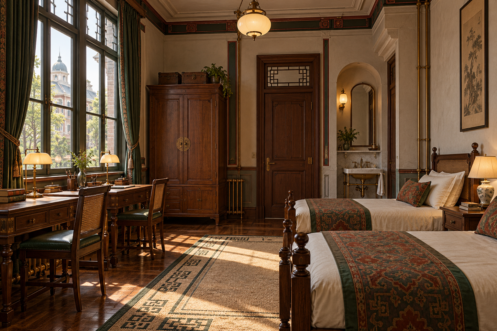
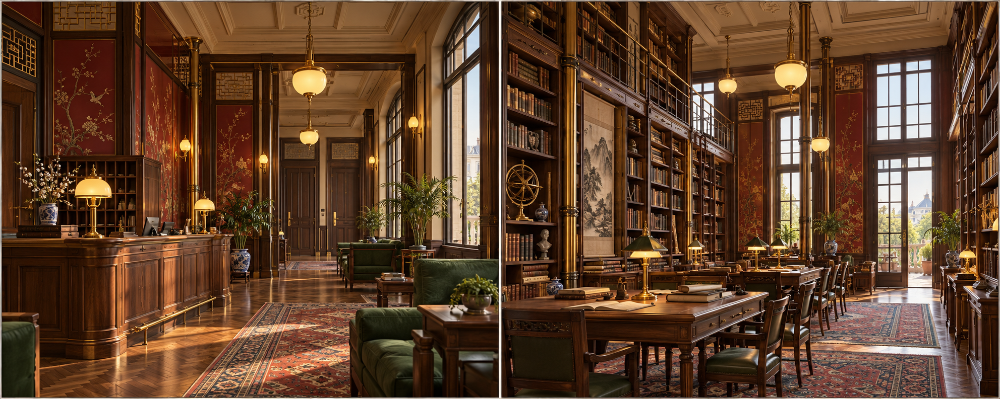
| 编号 | 名称 | 宽×深 |
|---|---|---|
| G301 | 迎宾接待 | 13×9 |
| G302 | 书阁 | 27×9 |
| G303 | 公共生活 | 12×9 |
| G304 | 公共生活 | 12×7 |
| G305 | 客房公共廊 | 76×3 |
| S1 | 主楼梯 | 6×8 |
| S2 | 后勤梯 | 4×8 |
| S3 | 另后梯 | 4×8 |
| T | 钟楼连续承重核 | 7×8 |
| G311 | 双人客房候选 | 6.5×9 |
| G312 | 双人客房候选 | 6.5×9 |
| G313 | 双人客房候选 | 6.5×9 |
| G314 | 双人客房候选 | 6.5×9 |
| G315 | 双人客房候选 | 7×9 |
| G316 | 双人客房候选 | 7×9 |
| G317 | 双人客房候选 | 7×9 |
| G318 | 双人客房候选 | 7×9 |
| TRW | 西翼屋顶露台 | 12×27 |
| TRE | 东翼屋顶露台 | 12×27 |
| G306 | 北公共前室 | 6×12 |
| CW | 核西公共廊 | 2.5×8 |
| CE | 核东公共廊 | 2.5×8 |
| NW | 北翼西公共廊 | 19×3 |
| NE | 北翼东公共廊 | 27×3 |
| HS2 | 梯前平台 | 4×1 |
| HS3 | 梯前平台 | 4×1 |
局部名录库下为北翼实体；钟楼核贯穿中联实体，不压庭院/书库。
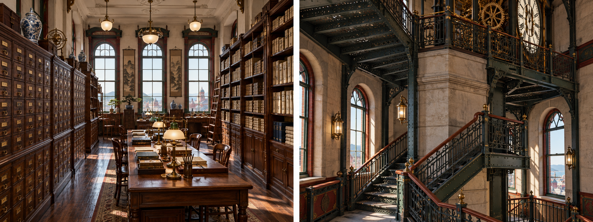
| 编号 | 名称 | 宽×深 |
|---|---|---|
| A401 | 名录库 | 6×10 |
| S1 | 名录库楼梯 | 6×8 |
| T | 钟楼梯及机芯核 | 7×8 |
| A402 | 名录库续间 | 6×10 |
后续四馆、后勤、住宅、修士、港区按逐层清单推进；未落位温室/港仓/艇库均明确为候选。